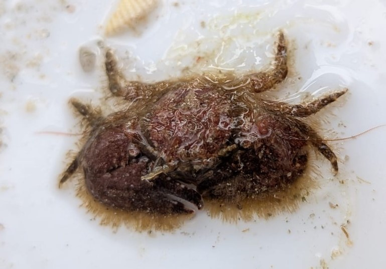
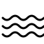
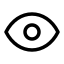

Porcellane grise
Porcellana platycheles

Eau de mer
Très communLa porcellane grise est un petit crustacé marin qui ressemble fortement à un petit crabe mais qui appartient a la famille des galathées. Elle est couverte de poils et se cache sous les rochers.
Informations scientifiques
| Nom scientifique | Porcellana platycheles |
|---|---|
| Nom commun | Porcellane grise |
| Famille | Porcellanidae |
| Infra-ordre | Anomura |
| Ordre | Decapoda |
| Classe | Malacostraca |
| Habitat | Estran rocheux, sous les pierres et dans les fissures du littoral. |
| Répartition | Côtes Atlantiques, Méditerranéenes, de la Manche et de la mer du Nord |
| Longueur | Environ 1,5 à 2 cm. |
| Alimentation | Particules organiques, cadavres et particules en suspension. |
Description
La porcellane grise possède un corps aplati et de larges pinces. Elle vit sous les pierres et dans les fissures de l'estran rocheux, où sa petite taille lui permet de se dissimuler facilement. Elle a 3 paires de pates "marcheuses" et une quatrième plus petite repliée sous son corps.
Elle se nourrit notamment de particules organiques et de matière en suspension. Son apparence est trompeuse : malgré sa silhouette de crabe, elle appartient aux Anomura et est donc plus proche des bernard-l'ermite que des véritables crabes.